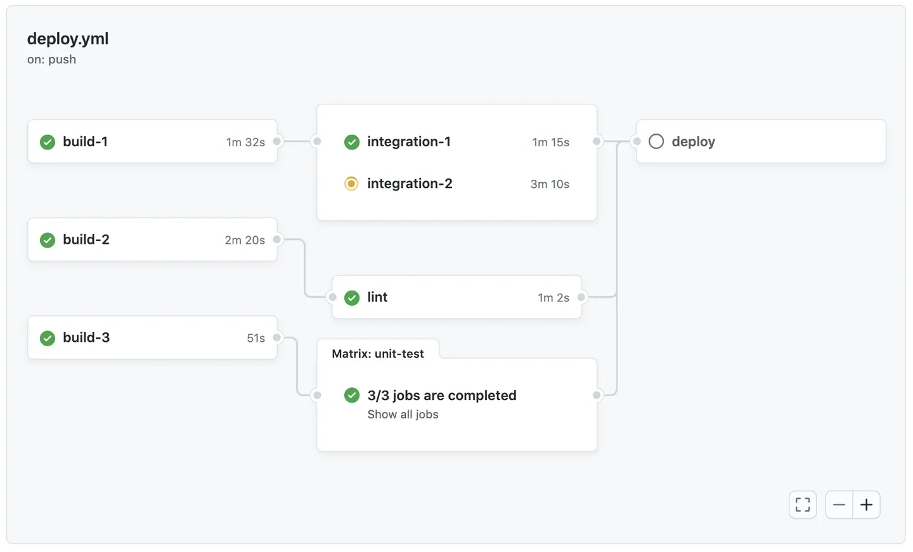

Testing
Let's build an action on github that runs automatic tests whenever a push is made to the main branch.
First, we will need to build the testing infrastructure in a repository.
Create Repository
Question 1
Question 2
Create Folders
Question 3
Let's create a lambda function similar to those created in previous classes. It will be a simple word processing function.
Question 4
Add Testing
Let's add unit tests to our project. Initially we will run the tests locally. Then, we will automate this task to be executed in a github action.
Question 5
Question 6
Question 7
Question 8
Question 9
Automating
In an environment where several Data Scientists work on the data team's various projects, it is desirable that there are automatic verification routines whenever modifications are sent to the repository.
Let's see how to automate the execution of tests using github actions.
Tip! 1
Failing tests is a good indication that the code should not have been submitted and should not be deployed!
Create Github Action
Let's create a directed acyclic graph (DAG) or pipeline with the sequence of steps to verify the tests in our repository.

The actions to be performed are stored in the .github/workflows folder in the repository root and are represented in YAML format.
Info!
YAML is a human-readable data serialization standard used for configuration files!
Question 10
Explaining workflow YAML:
- First, we provide a description for the workflow with:
- We set the action to be run whenever there is a
pushon themainbranch when doing: - To define a job, which is a group of steps that are executed together as part of a workflow run, we do:
Note that we defined that the task must be executed in an
ubuntucontainer.
Github will deal with container creation and management.
You have a free quota, see more Here
- Then we define a sequence of steps for our job:
- To bring code from the repository into the container:
- To set up Python:
- To install dependencies
- To run tests:
Check if it worked
Let's check if the action is executed correctly! Before everything:
Question 11
Question 12
Question 13
Question 14
Question 15
Answer
No! Although it is possible to configure this functionality, we did not do this.
Tasks
Question 16
Question 17
Question 18
Question 19